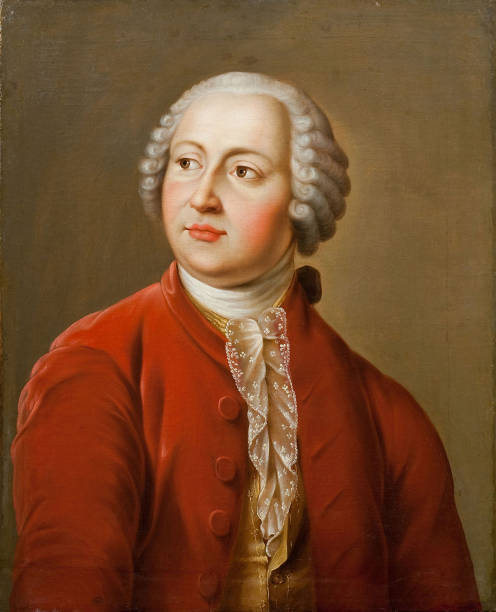

Ode to the Battle of Poltava
A patriotic ode written by Lomonosov celebrating the victory of Russia over Sweden in the Battle of Poltava.
Mikhail Lomonosov (1711–1765) was a Russian polymath, scientist, writer, and founder of Moscow State University.
Lomonosov was born in 1711 into a fisherman's family in the far north of Russia. As a boy, he learned navigation and meteorology, but also acquired basic knowledge of Russian grammar from a neighbor. His thirst for knowledge was so strong that in December 1730, possibly against his father's will but with an official pass from the community, he left his family and walked 1,000 kilometers to Moscow to begin studies at the Clerical Academy, which had been supported by the Russian Orthodox Church since 1685. Here, he presented himself as the son of a country nobleman, was admitted, and received a scholarship of three kopecks per day. Since Lomonosov did not know Latin, he had to start with the first class, where most students were younger than ten years old. Due to his outstanding achievements, four years later he was sent to the Academy of Sciences in St. Petersburg along with some fellow students..
In 1736, he continued his studies in Germany at the University of Marburg (particularly under the philosopher Christian Wolff) in the fields of philosophy, mathematics, chemistry, and physics, and from 1739 to 1740 at the Freiberg laboratory of Johann Friedrich Henckel in mineralogy, mining, and metallurgy. In Freiberg, he also engaged intensively with literature. In 1740, he returned to Marburg, where on June 6, 1740, he married Elisabeth Christina Zilch, the youngest daughter of his landlady who had been widowed since 1733. They had two daughters, Catharina Elisabeth (1739–1743) and Jelena (1749–1772), and a son Johannes, born and died in 1742.
In mid-May 1741, he traveled to St. Petersburg to write his doctoral thesis with Georg Wolfgang Krafft. Some years later, his wife followed him there. From 1745, he taught as a professor of chemistry in a teaching and research laboratory he established, but he was also very productive as a poet. In 1750, Empress Elizabeth asked him, along with the poet Trediakovsky, to write plays for the new national theater, which he successfully did.
In 1754/1755, with the active support of the Empress's favorite, Ivan Ivanovich Shuvalov, he helped found the Imperial Moscow University, which has been named Lomonosov University in his honor since 1940. In 1760, he became the director of the University of the St. Petersburg Academy of Sciences.
Lomonosov made significant contributions to various fields including chemistry, physics, and astronomy. He is best known for his discovery of the atmosphere of Venus and the law of conservation of matter in chemistry.
Mikhail Lomonosov is revered as one of Russia's greatest scientists and intellectuals. His contributions to science and education continue to be celebrated, and Moscow State University, which he founded in 1755, stands as a testament to his enduring legacy.
The house where Lomonosov lived during his studies in Marburg is still preserved in the Oberstadt district of the city. The house is a popular tourist attraction and a reminder of the time Lomonosov spent in Marburg.